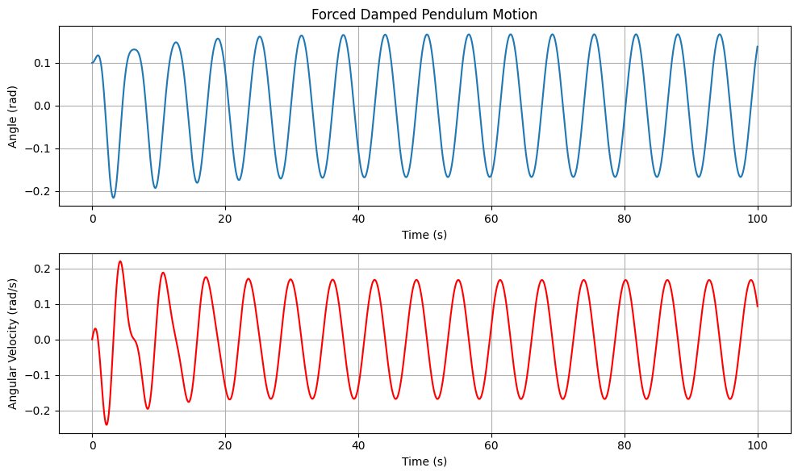
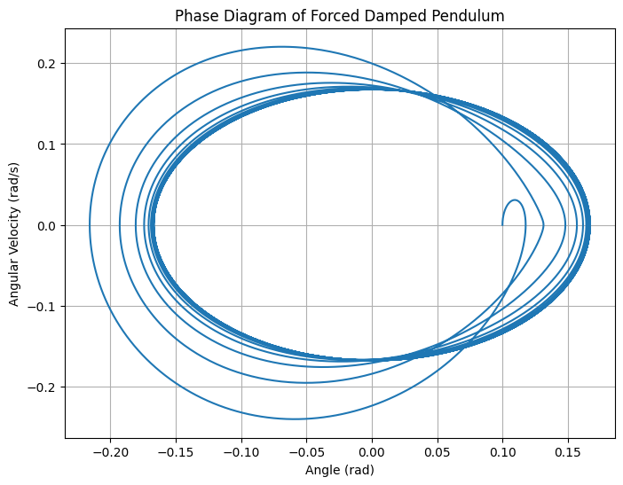
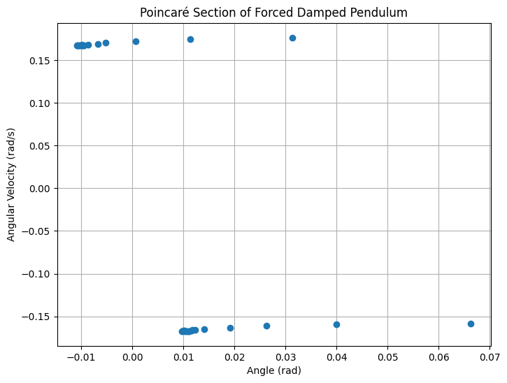

Problem 2
Task 1: Theoretical Foundation: Forced Damped Pendulum
Governing Equation
The motion of a forced damped pendulum is governed by the following second-order nonlinear differential equation:
where:
- \(\theta\) is the angular displacement,
- \(b\) is the damping coefficient,
- \(g\) is the acceleration due to gravity,
- \(L\) is the length of the pendulum,
- \(A\) is the amplitude of the external driving force,
- \(\omega\) is the driving frequency,
- \(t\) is time.
Small-Angle Approximation
For small angles, we use the approximation:
Substituting this into the equation simplifies it to:
This is a linear, non-homogeneous differential equation, which can be solved using the method of undetermined coefficients or by considering the system's natural and forced response.
General Solution
The solution consists of two parts:
- Homogeneous solution (solution to the undriven equation):
$$ \theta_h(t) = C_1 e^{r_1 t} + C_2 e^{r_2 t} $$
where \(r_1\) and \(r_2\) are the roots of the characteristic equation:
$$ r^2 + br + \frac{g}{L} = 0 $$
- Particular solution (steady-state response due to the driving force):
$$ \theta_p(t) = \Theta_0 \cos(\omega t - \delta) $$
where \(\Theta_0\) is the amplitude of oscillation, and \(\delta\) is the phase shift.
The full solution is:
For long times (\(t \to \infty\)), the transient terms (\(C_1 e^{r_1 t} + C_2 e^{r_2 t}\)) vanish due to damping, leaving only the steady-state oscillation.
Resonance Condition
Resonance occurs when the driving frequency \(\omega\) matches the system's natural frequency:
At resonance, the amplitude \(\Theta_0\) of oscillations reaches a maximum:
As damping (\(b\)) decreases, the resonance peak becomes sharper, meaning the system absorbs more energy from the driving force.
Implications of Resonance
- At resonance, the pendulum oscillates with large amplitude, potentially leading to chaotic motion for large angles.
- In real systems, excessive oscillations may lead to structural failure (e.g., bridges, buildings).
- Similar behavior is seen in electrical RLC circuits, where resonance maximizes current.
Task 3 : Practical Applications of the Forced Damped Pendulum
The forced damped pendulum serves as a model for various real-world systems where periodic forces interact with damping and restoring forces.
Real-World Applications of Forced Oscillations
1. Energy Harvesting Devices
Vibration-based energy harvesters convert mechanical motion into electrical energy. The voltage output of a piezoelectric harvester follows the equation:
where:
- \( V_0 \) is the initial voltage,
- \( \gamma \) is the damping coefficient,
- \( \omega \) is the oscillation frequency.
2. Suspension Bridges
Suspension bridges can experience resonance due to wind forces, modeled by:
where:
- \( F_0 \) is the driving force amplitude,
- \( m \) is the mass,
- \( \omega_0 \) is the natural frequency,
- \( \omega_{\text{drive}} \) is the driving frequency,
- \( \gamma \) is the damping coefficient.
3. Oscillating Circuits (RLC Circuit)
An RLC circuit with an alternating current behaves as a forced harmonic oscillator:
where:
- \( V_0 \) is the initial voltage,
- \( \gamma = \frac{R}{2L} \) is the damping coefficient,
- \( \omega = \frac{1}{\sqrt{LC}} \) is the resonance frequency.
The impedance of the circuit as a function of frequency is:
4. Clocks and Timekeeping
Pendulum clocks maintain accurate oscillations using an external forcing mechanism:
where:
- \( \theta_0 \) is the initial angular displacement,
- \( \gamma \) is the damping coefficient,
- \( A \) is the amplitude of the driving force.
The period of a simple pendulum is given by:
where \( L \) is the length of the pendulum and \( g \) is the acceleration due to gravity.
5. Human Movement & Biomechanics
Biomechanics uses forced oscillation models to describe gait dynamics:
where:
- \( \theta_0 \) is the initial leg angle,
- \( \gamma \) is the damping factor due to muscle resistance,
- \( \omega \) represents the natural swing frequency.
The human gait cycle can also be modeled using a second-order differential equation:
where:
- \( m \) is the effective mass of the leg,
- \( b \) is the damping coefficient,
- \( k \) is the stiffness,
- \( F_{\text{drive}}(t) \) is the external forcing function from muscles.
Task 4 : Forced Damped Pendulum Simulation
Introduction
The forced damped pendulum is a physical system where the motion of a pendulum is influenced by both damping (resistive force) and an external periodic force. We are going to model this system using the following differential equation:
Where: - $ \theta(t) $ is the angle of the pendulum as a function of time. - $ \gamma $ is the damping coefficient. - $ \omega_0 $ is the natural frequency of the pendulum (without damping). - $ A $ is the amplitude of the external driving force. - $ \omega $ is the frequency of the external driving force.
Step 1: Numerical Solution
We will use the Runge-Kutta method to solve this second-order differential equation.
import numpy as np
import matplotlib.pyplot as plt
from scipy.integrate import solve_ivp
# Define the system of ODEs
def damped_pendulum(t, y, gamma, omega_0, A, omega):
theta, theta_dot = y
dtheta_dt = theta_dot
dtheta_dot_dt = -2 * gamma * theta_dot - omega_0**2 * np.sin(theta) + A * np.cos(omega * t)
return [dtheta_dt, dtheta_dot_dt]
# Parameters
gamma = 0.1 # Damping coefficient
omega_0 = 2.0 # Natural frequency
A = 0.5 # Amplitude of the driving force
omega = 1.0 # Driving frequency
# Initial conditions
theta_0 = 0.1 # Initial angle in radians
theta_dot_0 = 0.0 # Initial angular velocity
y0 = [theta_0, theta_dot_0] # Initial conditions
# Time span for the simulation
t_span = (0, 100) # Time interval for the simulation
t_eval = np.linspace(t_span[0], t_span[1], 10000) # Time points for evaluation
# Solve the ODE
sol = solve_ivp(damped_pendulum, t_span, y0, args=(gamma, omega_0, A, omega), t_eval=t_eval)
# Plot the results
plt.figure(figsize=(10, 6))
plt.subplot(2, 1, 1)
plt.plot(sol.t, sol.y[0], label='Angle (theta)')
plt.xlabel('Time (s)')
plt.ylabel('Angle (rad)')
plt.title('Forced Damped Pendulum Motion')
plt.grid(True)
plt.subplot(2, 1, 2)
plt.plot(sol.t, sol.y[1], label='Angular Velocity (theta_dot)', color='r')
plt.xlabel('Time (s)')
plt.ylabel('Angular Velocity (rad/s)')
plt.grid(True)
plt.tight_layout()
plt.show()


